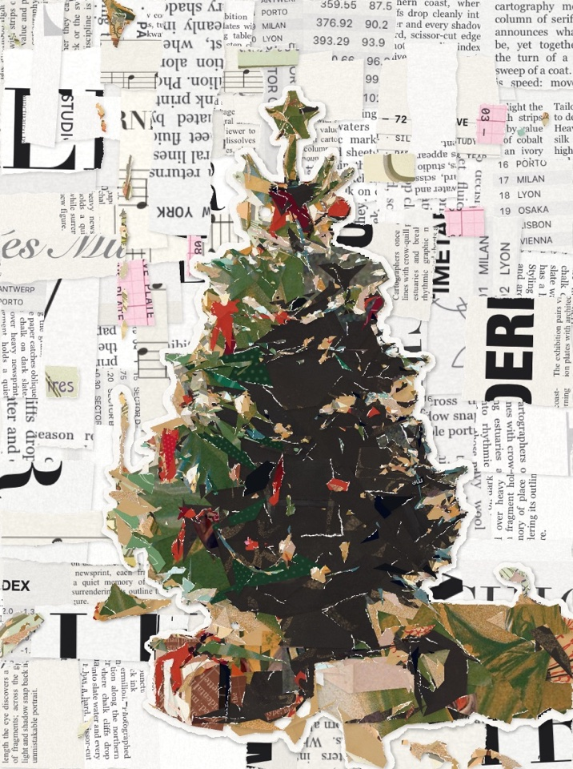
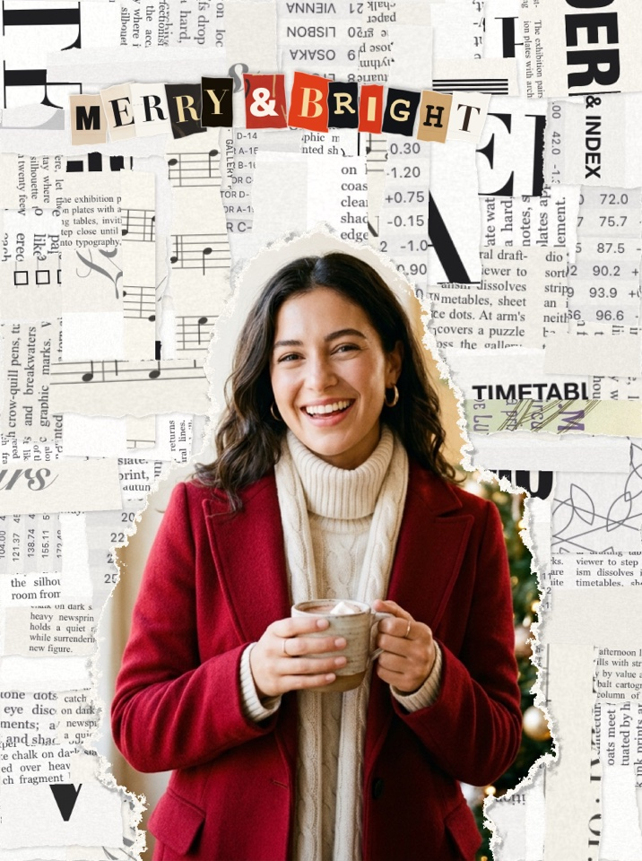
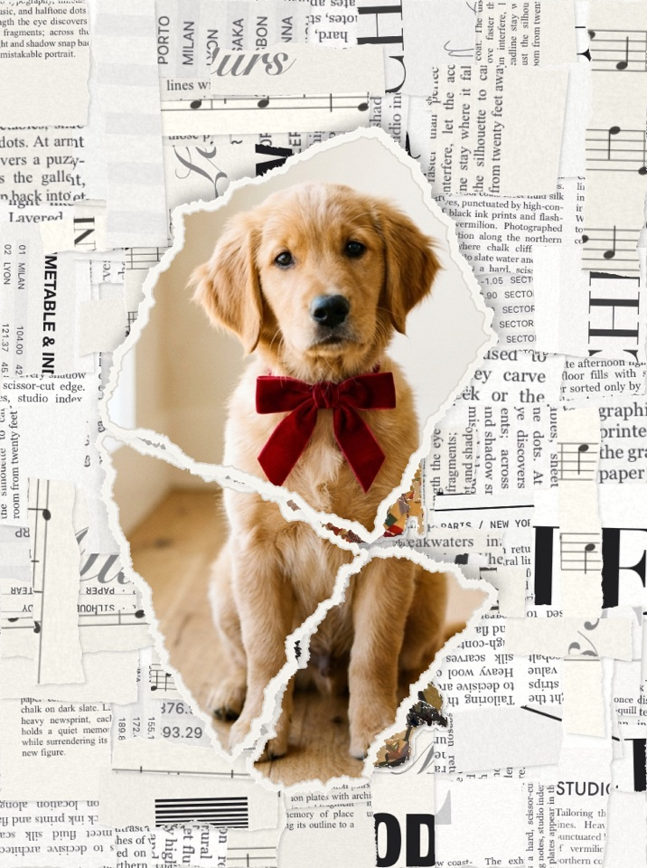

01 · POP ART
Pop Art
Up to 520 color-matched archival scraps snipped and layered across subject and ground with subtle deckle relief.
Real 3K museum lithographs, 1920s Paris broadsheets, and your own scanned pages—hand-snipped, torn, and composed live around any photograph with on-device Metal & Apple Vision.



Switch seamlessly between full paper-cut mosaics, hand-torn subject pop-outs, diagonal print windows, and organic ripped shards—all rendered live from genuine 3K paper scans.
Up to 520 color-matched archival scraps snipped and layered across subject and ground with subtle deckle relief.
Hand-ripped deckle silhouette around your real subject over a scissor-cut backdrop, plus rollable cutout typography.
Tear an edge-to-edge editorial band straight across the print—pinch, pan, and tilt live with world-locked photography.
Organic hand-torn contour split into interlocking paper shards so broadsheets and lithographs breathe through every crack.
From verified museum lithographs to tactile matte-shear haptics and 60fps optical bokeh premiere reels, every step celebrates physical craft.
Cut from Modern Editorial spreads, Vintage Lithograph Posters, and Paris 1920 broadsheets—or photograph your own physical magazines, receipts, and books right at the desk.
Paint over any scrap to resnip fresh paper, carve custom Paint Cut windows, refine subjects cleanly, and roll ransom-note or paper-strip typography along any path.
Export crisp 2.8K & 4.8K (300 DPI) prints, museum rag mats, transparent scissor-cut PNG stickers, and 5s or 10s 9:16 Metal-rendered editorial reels with soundtrack.
Snip 35 runs subject segmentation, color matching, Metal paper rendering, and 60fps video encoding 100% locally on your device. No servers, no accounts, no ad SDKs, and zero AI training on your camera roll.
Every plan is handled securely by Apple with Family Sharing included. No hidden credits or pay-per-export gimmicks.
$0 to explore & cut
No account or card required to start.
$9.99/year · or $19.99 lifetime
Annual plan includes a 7-day free trial, then auto-renews at $9.99/year unless canceled at least 24 hours before renewal in Apple Account Settings. Lifetime ($19.99) is a one-time purchase. Both support Apple Family Sharing. See Terms of Use.
Designed exclusively for iPhone with Metal GPU paper rendering, Apple Vision cutouts, and real 3K archival print textures.